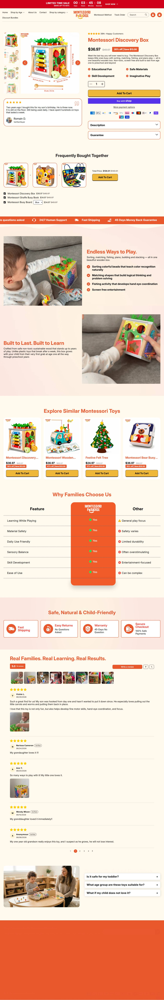
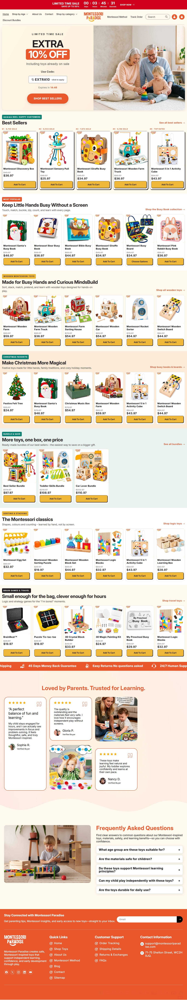
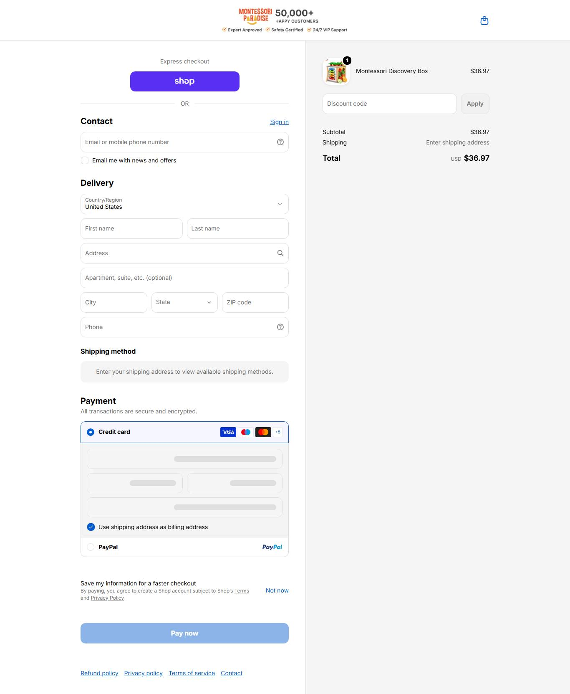

Montessori Paradise MODELAR
A lista de presentes para avó como pré-venda de Novembro e Dezembro e a garantia longa. Não copiar "80K+ happy customers" (loja de 9 meses: alegação impossível de provar).
01Produto campeão

Montessori Discovery Box
$36.97 $49.97
Desconto anunciado: 26% · ticket de referência da loja (mediana do catálogo): $36.97 observado
43 produtos (mediana $36,97, faixa $4,99 a $144,97): discovery box, busy books por animal, busy board, brinquedo sensorial de puxar, árvore de feltro
02Mídia paga
119
anúncios ativos auditados
observado · Meta Ads, page_id
338
histórico total
observado · Meta Ads, ALL
35,2%
Sobrevivência
calculado
anuncia no Google (8 anúncios)
Google Ads
observado · Transparency Center
| Ritmo de criativo | Valor |
|---|---|
| Anúncios por dia | ~9,4 por dia (50 anúncios em ~5,3 dias) |
| Criativos únicos por semana | ~10 títulos novos por semana |
| Duplicação | ~6x (8 títulos em 50 anúncios) |
| Longevidade do anúncio mais antigo ativo | ~15 dias (campanha de avó) |
| Leitura (momentum) | lançamento de Natal: 119 dos 338 anúncios no ar (35%), loja de 9 meses; campanha de avó começou há ~15 dias |
Ranking de criativos vencedores
| # | Criativo (título real) | Dias no ar | Link |
|---|---|---|---|
| 1 | "10 Christmas Gifts Grandma Won't Regret Buying 🎁" | 15 dias | Biblioteca de Anúncios ↗ |
| 2 | "Grandma's Favorite Gift 👵" | 7 dias | Biblioteca de Anúncios ↗ |
| 3 | "The Screen-Free Favorite Kids Actually Use" | outubro de 2026 | Biblioteca de Anúncios ↗ |
03Tráfego
Não obtidonão obtidoSimilarWeb bloqueou a coleta automática de montessoriparadise.com (bloqueio de IP do CloudFront em todas as tentativas); a extensão manual não foi usada por escolha sua Sinal indireto: fora do ranking Tranco (tráfego abaixo do limiar dessa lista, o que não quer dizer zero).
não obtido
visitas/mês
SimilarWeb bloqueado
observado
não obtido
pago x orgânico
SimilarWeb bloqueado
observado
nenhum perfil achado
presença orgânica
nenhum perfil achado
observado · coletar.mjs
anuncia no Google (8 anúncios)
outro canal pago
observado · Google Ads Transparency
04Faturamento e investimento
$34,012
Faturamento mensal (central)
estimado incerto: proxy de reviews verificados
inferido
$17,006
piso
inferido
$51,019
teto
inferido
$3,714
mídia/mês estimada
10,92% da receita (IRP)
inferido
Método: 117 reviews verificados (JSON-LD de 11 produtos, piso) ÷ taxa de review de 1% a 3% = 3.900 a 11.700 pedidos em ~8,5 meses de loja; as datas dos reviews não foram conferidas (o JSON-LD não traz data), então parte pode ser review importado do fornecedor e a conta tende a superestimar, vezes o ticket de US$ 36,97. Selo: estimado incerto (sem SimilarWeb para conferir). Benchmark do setor (IRP ago/2026, Baby & Child): conversão 0,57% (piso), CPA 10,92% da receita; CPM US$ 10,42 e CPC US$ 0,67 (referência pública Meta e-commerce 2026).
05Reviews
117 reviews verificados em 11 produtos (piso), contra "80K+ happy customers" na home de uma loja de 9 meses (alegação impossível). Tema de reclamação recorrente não obtidonenhum app expôs reviews de nota baixa nas páginas amostradas; no nicho todo, a reclamação recorrente é peça que solta e som/pilha (voz do mercado).
06Páginas da loja
Home

PDP · Montessori Discovery Box
Carrinho com item

07Anatomia do vencedor
| Elemento | Decodificado |
|---|---|
| Big idea | O presente que a avó não se arrepende de comprar. |
| Mecanismo | Lista curada "por idade" que tira da avó o medo de errar o presente. |
| Hook | Título de lista para avó ("10 Christmas Gifts Grandma Won't Regret Buying"). |
| Presell (pré-venda) | Sim: "/pages/christmas-gifts-grandmas-are-buying" e "/pages/10-guilt-free-toys-to-spoil-your-grandchild" antes do produto. |
| Objeção principal | "E se a criança não gostar?", respondida com 45 dias de devolução e "a purchase you will never regret". |
| Ângulos ativos (títulos reais) |
|---|
| "10 Christmas Gifts Grandma Won't Regret Buying 🎁" |
| "Grandma's Favorite Gift 👵" |
| "The Screen-Free Favorite Kids Actually Use" |
| "A Purchase You Will Never Regret." |
Momentum da operação: lançamento de Natal: 119 dos 338 anúncios no ar (35%), loja de 9 meses; campanha de avó começou há ~15 dias.
08Catálogo e stack
- Plataforma
- Shopify
- Apps
- Judge.me, Klaviyo, Klarna, Pinterest, Snap, Clarity
- Pixel da Meta
- não obtidoID não exposto no HTML lido
- Catálogo
- 43 produtos (mediana $36,97, faixa $4,99 a $144,97): discovery box, busy books por animal, busy board, brinquedo sensorial de puxar, árvore de feltro
- Redes
- nenhum perfil achado
- Frete
- grátis acima de US$ 70
- Garantia
- 45 dias de devolução "no questions asked"
- Prazo e BNPL
- prazo não declarado (página de política de envio retornou 404); BNPL: Klarna
- Troca
- 45 dias de devolução "no questions asked"; frete grátis acima de $70
- Sinal de fornecedor
- endereço de escritório virtual em Londres (71-75 Shelton Street); loja aberta em 01/2026 alegando "80K+ happy customers"; 100% tráfego pago
o que copiarA lista de presentes para avó como pré-venda de Novembro e Dezembro e a garantia longa. Não copiar "80K+ happy customers" (loja de 9 meses: alegação impossível de provar).
09Dados não obtidos
| Dado | Motivo | Método tentado |
|---|---|---|
| Visitas mensais | SimilarWeb bloqueou a coleta automática (CloudFront) | trafego.js com 2 tentativas |
| Comentários dos anúncios | o conector não entrega comentários | snapshot público |
| Prazo de entrega | página de política de envio retornou 404 | WebFetch em /policies/shipping-policy e /pages/faq |
10Veredito
DROPSHIP PURO
modelo
inferido
MODELAR
veredito
inferido
NÍVEL INICIANTE
nível (10/12)
calculado
ARBITRAGEM
defensabilidade
inferido
| Eixo do scorecard | Pontos |
|---|---|
| Sourcing simples | 2/2 |
| Ticket fecha sem escada complexa | 1/2 |
| Criativo simples de produzir | 1/2 |
| Mecanismo com urgência | 2/2 |
| Investimento de entrada baixo | 2/2 |
| Sem dependência de autoridade de marca | 2/2 |
| Total | 10/12 |
Fontede onde veio
Meta Ads, products.json, prints, reviews.observado
Observaçãoo que foi visto
lançamento de Natal: 119 dos 338 anúncios no ar (35%), loja de 9 meses; campanha de avó começou há ~15 diasobservado
Interpretaçãoo que isso sugere
O presente que a avó não se arrepende de comprar.inferido
Decisãoo que a régua diz
MODELAR · DROPSHIP PURO · nível INICIANTEcalculado
Próxima açãoo que fazer agora
A lista de presentes para avó como pré-venda de Novembro e Dezembro e a garantia longa. Não copiar "80K+ happy customers" (loja de 9 meses: alegação impossível de provar).recomendado